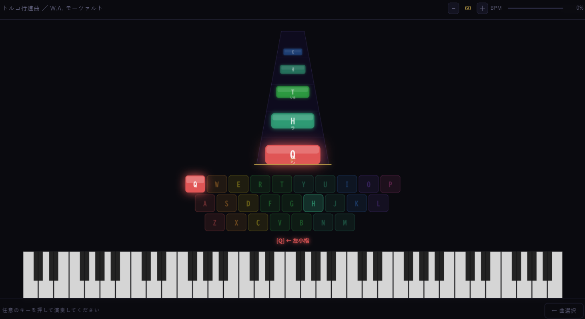

Piano Typing
Falling tiles tell you the next key to press, so all you do is play at your own pace. It's a rhythm-meets-typing game that lets you perform classics like the Turkish March with your own hands — and it's perfect for home-row practice. A keyboard game, for PC.

Read the guide below, or load the game when you are ready.
Best played on a PC with a keyboard. Click the screen once at the start to enable sound.
The falling tiles are a preview of the next key to press. There's no timing to hit — press the keys at your own pace and the melody of a classic like the Turkish March advances one note at a time. It's a game that takes the best of rhythm games and typing. You don't need to memorize which key is which note: the most-used notes are auto-assigned to the home row (left hand ASDF, right hand JKL;), and the game shows you which finger to use for each. Since there's no timing judgment to fail, even piano beginners can play a whole piece through at their own comfortable rhythm.
At a Glance
| Genre | Rhythm x typing (piano) |
|---|---|
| Price | Free, no install |
| Platform | PC recommended (keyboard controls) |
| Controls | Just press the highlighted keys / fingering guide included |
| Highlights | No timing judgment - play at your own pace / combos add accompaniment / adjustable BPM |
How to Play
Click the game once, then watch the tiles falling at the bottom of the screen (previews of the next key to press) and press the keys at your own pace. There's no timing to match.
- 1. Press keys at your own pace: the falling tiles preview the next key. There's no timing to hit, so press at a tempo that's comfortable for you and the melody advances one note at a time
- 2. Copy the fingering: prompts like "[Q] ← left pinky" show you which finger to use. Once you get a feel for returning your fingers to the home row, it all gets smoother and smoother
- 3. Chain combos: in Für Elise and Turkish March, successful presses add bass and drums, then strings and brass; the Clock lesson stays piano-only — the performance grows richer and richer
The trick is to not dutifully wait for the tiles to line up. Trying to match the exact moment a tile lands actually pulls you off the song's real tempo. Since there's no timing judgment, the most satisfying way to play is at a rhythm that feels good to you — ideally the song's own tempo.
Songs
As a prototype, it includes three pieces that just about everyone has heard at least once.
- My Grandfather's Clock (for practice; arranged in easy-to-play C major — start here)
- Für Elise (Beethoven)
- Turkish March (Mozart: Rondo alla Turca, 3rd movement of K.331)
The songs aren't transcribed by ear — the pitches come from public-domain sheet music (MIDI) data, so the melodies match the originals. Pick a song from "Song Select" in the bottom-right of the screen. I plan to add more songs over time based on how people respond.
Developer's Note
"I've never played an instrument, but it'd feel great to play a famous piece with my own hands" — that's the feeling I made this with. The goal isn't the illusion of playing; it's the real sensation of actually doing it yourself. That's why I don't fail you on timing, and instead let you play at your own pace. Rather than waiting on the tiles, I want you to play freely at the song's own rhythm. The moment the combos connect, the accompaniment layers in one part at a time, and a solo piano turns into a little orchestra — that's the real highlight.
Why sound makes the practice stick is covered in this development note.
FAQ
- Can I play even if I'm bad at reading music or typing?
- Yes. There's no timing judgment, so you can't get a game over from mistakes. The falling tiles preview the next key to press, so as long as you follow them at your own pace, the song advances one note at a time.
- Can I play on a phone?
- You can technically play on a phone by tapping the highlighted tiles, but we recommend a PC with a keyboard so you can make the most of the fingering guide.
- Is it good typing practice?
- The most-used notes are mapped to F, J, D, K, S, L, A, G and H; pieces with more pitches also use other letter keys, and the game shows you which finger to use, so you can practice the home row while having fun.
Credits
Sound
· Piano and orchestra sounds use Tone.js and the Salamander Grand Piano samples
Song data
· Turkish March: from public-domain sheet music via the Mutopia Project
· My Grandfather's Clock: from public-domain MIDI via mfiles.co.uk
All songs are based on public-domain sheet music and MIDI.